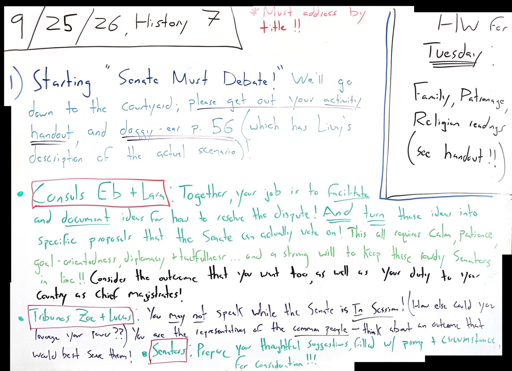

Friday, 9/25/26 MOST RECENT CLASS

Summary Of Class
- We started “Senate Must Decide!” down in the courtyard. Consuls Eb and Lara ran the Senate, Tribunes Zoe and Lucas spoke for the common people, and the Senators made their proposals (with lots of pomp and circumstance!).
- We’ll keep going on Tuesday and try to get a bill passed!
- Reminder: the “Roman Families, Patrons, and Gods” readings are due Tuesday. See the handout!
Homework: due Tuesday 9/29!
R+A the textbook chapter “Fathers, Gods, and Goddesses” (pgs. 79-83) AND the primary sources on pgs. 62-68 in your reader! The info you need and the guiding q’s are all on the handout (there’s a copy on Blackbaud too).
Please break it up over the week – don’t save it all for Monday night!
Board As Text
9/25/26, History 7
*Must address by title!!
1) Starting “Senate Must Debate!” We’ll go down to the courtyard; please get out your activity handout, and doggy-ear p. 56 (which has Livy’s description of the actual scenario)!
• Consuls Eb + Lara: Together, your job is to facilitate and document ideas for how to resolve the dispute! And turn these ideas into specific proposals that the Senate can actually vote on! This all requires calm, patience, goal-orientedness, diplomacy + tactfulness… and a strong will to keep these rowdy Senators in line!! Consider the outcome that you want too, as well as your duty to your country as chief magistrates!
• Tribunes Zoe + Lucas: You may not speak while the Senate is In Session! (How else could you leverage your power??) You are the representatives of the common people – think about an outcome that would best serve them!
• Senators: Prepare your thoughtful suggestions, filled w/ pomp + circumstance, for consideration!!!
HW for Tuesday: Family, Patronage, Religion readings (See handout!!)